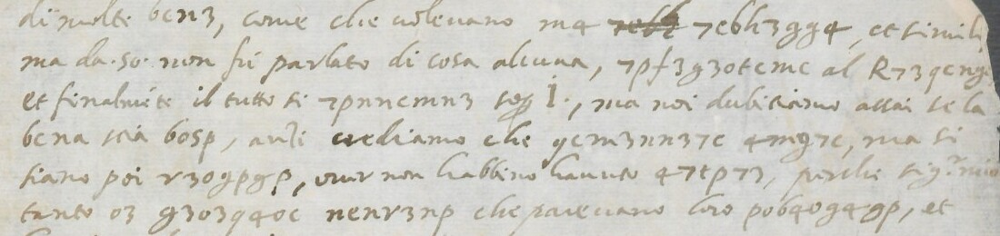

Cipher Letters › Modena, Biblioteca Estense › 1612
"Do not show your hand without need": Girolamo Augustoni (as catalogued) to an unnamed correspondent, 9 October 1612
A report on a negotiation over fiefs, written in clear Italian with the sensitive words in a cipher of letter-like signs and the persons hidden by codes. Read in part, with the key recovered from the ciphertext alone.
- Letter
- One page, c. 1r, dated 9 Oct 1612 by the close and the verso docket. The page begins in mid-sentence.
- From / to
- Girolamo Augustoni by the library's catalogue (the signature is not read) → a correspondent addressed as "Sig.r mio" and "V.S.", not named
- Held at
- Biblioteca Estense Universitaria, Modena, Autografoteca Campori, Lettera A, Augustoni, Girolamo, c. 1
- Cipher
- Simple substitution with letter-like signs: 25 signs for 19 letters, inside a clear letter; codes for persons; 600 units
- Read
- 82 of 113 cipher words (0.726); by cipher units 537 of 587 (91.5%) on the reviewer's strict rule
- Record
- Cyphersolver, targets/augustoni1612 (PR #452, issue #427); maintainer's write-up: augustoni1612

Decoded
What is new and what was known
No edition or reading of this letter was found, and the leaf carries no decipherment. Priority is not established. The search on 11 Nov 2026 covered the Cyphersolver repository, its catalogue vetting, web searches for the letter and its matter, and the Archivio di Stato di Modena inventory of the Cancelleria ducale, Ambasciatori, Milano (no Augustoni between 1600 and 1620). Not checked: the Biblioteca comunale di Correggio ("Notizie sparse della famiglia Augustoni"), the Archivio di Stato di Milano, the printed Campori catalogue, and the Este agents' series in Modena page by page.
What this work adds: a key recovered from the ciphertext alone, a reading of the cipher words, the clear text read in full for the first time, and an English translation.
The letter
The page has 29 lines of body and a postscript of about 12 lines, in clear Italian with 112 words or signs in cipher. The verso has no cipher. The library catalogues the letter as Girolamo Augustoni's; we have not read the signature and cannot confirm the name from the sheet. The close reads "Di Carp.", perhaps Carpi; that is doubtful.
The titles in the letter ("Gran Canceliero", the Governor of Milan, the King, the Ambassador of Spain) suggest the Spanish State of Milan. unverified Which fiefs and which house are meant is not known.
What the writer says
Italian as read; English from the translation in the repository. [?word] = doubtful; [...] = not read; [I.], [PP.], [25], [50] = codes for persons, not identified.
The writer reports, in the first person plural, on a negotiation over fiefs. Rochetta is named. The other side had said they wanted various things, and a person hidden as 50 said nothing.
"ma da [50] non fu parlato di cosa alcuna, rimetendolo al Prevost[o], et finalmente il tutto si rissolse [?per] [I.]""but by [50] nothing at all was said, the matter being referred to the Provost, and in the end the whole was settled [?by] [I.]"
The writer doubts this account: he thinks they wanted something else and lost their nerve. The ministers pressed harder than I. himself for the fiefs not to be shut out of the "compromesso", the agreement to go to arbitration. Then the writer's side gets hold of a letter.
"Habbiamo però con a[s]t[u]tia [?cavato] una letera del Prevos[to], dove dice che al sicuro quella aggionta non puol significare altro che la tottal esclusione delli [f]eudi""We have however by [?cunning] [?got out] a letter of the [?Provost], where he says that for certain that addition can mean nothing other than the total exclusion of the [?fiefs]"
Perhaps they mean no such thing: the deed is only a private one, without a penalty, and the party is a minor. I. was very low and tried to visit PP., who would not have it. The letter ends with advice.
"ma non vi scoprite senza bisogno, et ancora [?siate] cauto nel scriver al Prevosto""but do not show your hand without need, and also [?be] careful in writing to the Provost"
The postscript adds that the Governor of Milan has offered to write to the King and has written to the Spanish ambassador, and that the writer doubts whether 50 is in earnest. The end of the postscript and the close are read only in part.
The cipher
A simple substitution with letter-like signs: 25 signs for 19 letters, with two signs each for a, c, e, g and u and three for p. U and v are one letter; there is no sign for q, z or x. Single words and phrases are put in cipher inside the clear letter, with word division kept.
Persons are hidden twice over. Codes written in clear script with points (I., PP., 25., and .50. in the clear text) are not touched by the key and are not identified. One abbreviation sign, written here as &, has no key value. The 600 units of the page are 580 cipher signs, 3 signs not legible, 4 clear-script letters inside cipher words, 6 of the & sign and 7 codes.
How it was read
- 11 Nov 2026. First transcription of the cipher words, frozen. An annealing solver with an Italian four-letter model, four restarts of 20,000 steps, no crib and no gloss: two restarts gave Italian (rimetendolo, volessero, dubitiamo, li feudi, compromesso, negotiato, la causa). The output showed that the first transcription had merged two pairs of signs.
- A second transcription by the same reader, made after the solver output and so not blind. The key was frozen from it.
- A blind second reader: another session that opened only the page images, with its own sign names, frozen before it opened the key or any decode.
- A consensus of the two, settled on crops, with one decoder, a file of label aliases and a file of 13 overrides by coordinate. One split of a blind label (a rounded u-form read as n, 8 units) was made after the decode was known, by a reader who knew the words. All of these are listed in the repository.
- 12 Nov 2026. Daniel Bourdeau's readings checked on the image, the clear text read in full for the first time, and the files made.
Checks
- Shuffled keys: under the key, the blind transcription puts 394 of 587 cipher signs in Italian dictionary words (67.12%); the best of 5,000 shuffled keys puts 60 (10.22%). None of the 5,000 reaches the real key. Daniel Bourdeau's own control: 0 of 5,000.
- Statistical validation: the repository's test gives a pass (reading -2.179 per letter, random keys -4.981, a key annealed onto shuffled ciphertext at best -2.979).
- Independent decoder: at integration a decoder written separately from the key and the aliases reproduced the key output for all 30 lines that carry cipher.
- Maintainer's check: the verification of the issue compared about 35 cipher words (about 200 signs) with the image. Daniel Bourdeau read three better words from the image (INGANO, ASTUTIA, SCR[I]TURA), corrected CONSCENSO and "sia", and recounted the units: 537 of 587 = 91.5%. The 94.0% first given in the issue did not reproduce and is withdrawn.
- A correction of our own: the issue read ".50." as "S.S." and translated "His Holiness said nothing". The sheet has .50., a code for a person. The Pope does not appear in the letter.
How much is read?
| Measure | Read |
|---|---|
| Cipher words only (the measure since 16 Nov 2026) | 82 of 113 = 0.726 |
| Whole letter, clear text included (not the measure) | 314 words read, 56 holes = 0.849 |
| Cipher units, the reviewer's strict rule | 537 of 587 = 91.5% |
| Cipher units, the blind transcription alone | 517 of 587 = 88.07% |
The 31 holes among the 113 cipher words are the codes, the & sign, one sign in the gutter, one word whose sense is not clear, and 14 words with a letter supplied, emended or restored at the torn edge. Counting the two restorations at the torn edge as read gives 84 of 113 = 0.743.
What remains uncertain
- The codes I. (five times), PP., 25. and .50. (twice) are not identified, and no other letter of the correspondence has been looked for.
- The & sign has no key value: "per" from context at four places, unread at two.
- One cipher sign in the gutter at the start of line 10 is unread: the fold hides it.
- Signs under blots on lines 14 and 19 take their values from the word; Daniel Bourdeau and the contributor read the blots on line 19 differently.
- The rounded u-form read as n (8 units) was split after decoding. With those 8 also counted as emended, the unit figure is 530 of 587 = 90.29%.
- The clear text has doubtful words; the postscript is read in part; the signature, place and names are not established.
Who did what
Malcolm McBratney (Brisbane) contributed the work and sent it as issue #427, with Claude (Anthropic) models doing the transcriptions, solving, scripts, image checks and files. Daniel Bourdeau checked the issue on 12 Nov 2026: he read INGANO, ASTUTIA and SCR[I]TURA from the image, corrected CONSCENSO and "sia", and recounted the units. The work was integrated in Cyphersolver (issue #427, PR #452) on 12 Nov 2026.
Sources
- Biblioteca Estense Universitaria, Modena, Autografoteca Campori, Augustoni c. 1: record.
- Cyphersolver, targets/augustoni1612: transcriptions, key, aliases, overrides, reading, translation, counts and checks.
- Cyphersolver write-up: augustoni1612.